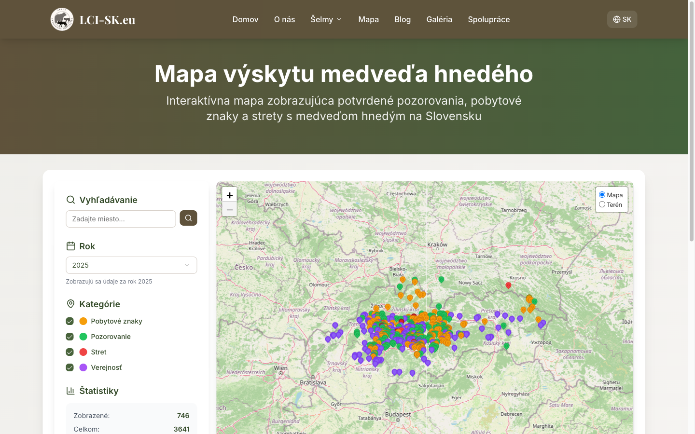

2026 · Shipped · Client work
LCI-SK
Large-carnivore conservation in Slovakia — bear, wolf and lynx. Two jobs in one site: an editorial front that makes people care, and a genuine data tool behind it plotting thousands of field records on an interactive map.

Two registers, one site
Conservation sites usually pick a side: campaign poster or database. This one needed both, so the design switches register deliberately rather than blending them.
- Editorial front. High-contrast serif over full-bleed wildlife photography, minimal chrome, no cards. The animal is the interface.
- Instrument behind. The map page drops the serif entirely — sans-serif, a filter rail, checkbox legends and a live record count.
- Earth palette. Brown and forest green pulled from the photography, so the UI never fights the images.
- Bilingual. Slovak default with an English toggle, both first-class.

The data problem
Records arrive from the state forestry service in half-yearly batches and are appended to the existing set — so the map is only as good as the import discipline behind it. Four categories (field signs, sightings, encounters, public reports) each get their own pin colour, and the year filter keeps a decade of data from collapsing into one unreadable cloud over the Carpathians.
Palette
Client work. Screenshots and write-up only — the site's content, photography and data belong to the client and are not republished here.